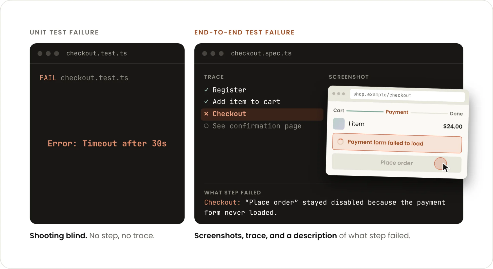

claude.dev · Engineering（作者 Addy Osmani） · 2026-11-16
How the Claude Code team thinks about verificationClaude Code 团队怎么想「验证」这件事
60 秒速览：这篇文章在说什么
译者所加，不是原文的一部分 —— 读完这 4 条，再看原文会快很多。
- 一句话结论：能不能让智能体自己拿出证据，决定了你能并行跑几个 Claude。文章内部测试里，让独立的评分者按评分标准判分，比普通提示循环把成功率最多提高了 10 个百分点。
- 三类值得投入的测试：端到端最难被骗（要么整个功能能用，要么不能用）；属性测试用人想不到的边界输入去试；差分测试拿旧系统当标准答案，专治大规模迁移。
- 团队自己的八条做法：端到端跑起来比测试重要；检查器由代码负责人写；39 项可靠性清单按 diff 触发、每次只查 3–10 条；只调主审查者不叠加；检查不能被它所检查的改动修改；新闸门先跑 observe 模式；用真实回滚与打回来评测审查者；漏掉的 bug 要变成规则。
- 成本侧的一句话：验证层要当系统经营——隔离权限、对着真 bug 打分、记录教训并定期修剪，否则规则和测试只会一直变多。
常见做法
- 只跑单元测试，快、稳，但可能通过了功能还是坏的
- 审查靠叠加更多人，越堆越贵
- 检查规则写在哪都行，改代码的人顺手也能改
- 新闸门一上来就强制拦提交
本文的做法
- 以端到端为主，属性与差分补齐边界与迁移
- 只调主审查者，用 REVIEW.md 告诉它该看什么
- 规则放在改动动不了的分支，只从基线读
- 先 observe 记录误报，再进 enforce；被拦两次就放行
对照表是译者按原文整理，不是原文自带的表格。
读法建议：想直接抄作业，读第二节的三类测试与第三节的八条做法；想理解为什么现在可行，留意最后一节「让验证层守规矩」的那几句。
核心论断：能不能让智能体自己拿出证据，决定了你同时能跑几个 Claude。验证的成本已经从「每次人工检查」变成「写一次、跑很多次的软件」；再把验证结果回灌成规则，才算把循环闭上。
How end-to-end, property and differential tests let coding agents verify their work with evidence, and what the Claude Code team does to keep its verifiers honest.
端到端测试、属性测试与差分测试，如何让编码智能体用证据验证自己的工作；以及 Claude Code 团队做了哪些事，让自家的验证器保持诚实。
On the Claude Code team, the vast majority of our code (~90%) is written and reviewed by Claude. At this scale, how we equip our agents to verify their work with evidence becomes extremely important. Verification loops are the building block that lets you delegate more work to Claude. Without them, you can really only run one or two Claudes at a time, because you have to check everything yourself. With them, you can run dozens or hundreds in parallel. That’s because giving agents a way to verify their output is an effective way to improve quality. In internal testing around structured file generation, having a separate grader check Claude’s work against a rubric improved task success by up to 10 points over a standard prompting loop, with the largest gains on the hardest problems. What was once expensive to verify (tests, benchmarks, specs, real end-to-end runs) is now cheap to request from an agent. Like code, agents can quickly generate tests, benchmarks, and specs. And once generated, these tests and benchmarks run as software so they can be run frequently without using many additional tokens. You can also close the verification loop by using the results to improve the agent’s performance on that task. For example, if an agent repeatedly fails a test that checks logs for user data, you can create a hook or a more explicit rule in your CLAUDE.md to avoid future issues. This (mostly) stops issues from happening again. So if verification is critical to producing quality code at a high velocity, what types of tests should you use and how should you apply them across your pipeline? This article answers those questions and also shares the process used by the Claude Code team.
在 Claude Code 团队，我们绝大部分的代码（约 90%）由 Claude 编写，也由 Claude 审查。在这样的规模下，怎么让智能体拿得出证据来验证自己的工作，就变得极其重要。验证循环是让你能把更多工作委派给 Claude 的那块基石。没有它们，你实际上只能同时跑一两个 Claude，因为每一件事都得你自己检查。有了它们，你可以并行跑几十个甚至几百个。原因在于，给智能体一条验证自己输出的途径，是提升质量的有效办法。在围绕结构化文件生成的内部测试里，让一个独立的评分者对照评分标准来检查 Claude 的工作，比标准的提示循环把任务成功率最多提升了 10 个百分点，而越难的问题收益越大。过去验证起来很贵的东西（测试、基准、规格、真实的端到端运行），现在请智能体去做并不贵。和写代码一样，智能体可以很快生成测试、基准和规格。而且一旦生成，这些测试和基准就以软件的形式运行，因此可以频繁地跑，而不必消耗太多额外的 token。你还可以把验证循环闭上：用结果去改善智能体在那项任务上的表现。举个例子，如果有个智能体反复通不过一项检查日志里是否出现用户数据的测试，你可以在 CLAUDE.md 里加一个钩子、或者写一条更明确的规则，来避免以后再出问题。这（大体上）能让同类问题不再发生。那么，如果验证对高速产出高质量代码如此关键，你该用哪几类测试，又该怎样把它们贯穿到整条流水线？本文回答这些问题，同时分享 Claude Code 团队自己用的流程。
Not all tests are created equal: 3 tests worth investing in不是所有测试生而平等：三类值得投入的测试
选测试先看失败模式：不稳定会让智能体学会重跑，太慢会让它少测。三类值得投入——端到端最不容易被骗；属性测试补上人想不到的边界；差分测试拿旧系统当标准答案。
No matter which test type you choose, there are a few failure modes to avoid. If your tests are flaky you’ll train the agent to run them again rather than fixing the failing code. If your tests are slow, the agent will do fewer tests across batches which can make pinpointing issues difficult. Heavier tests are best deployed before you’ve committed the changes. Now, here are the three types of tests I think are most worth investing in.
不管你选哪一类测试，都有几种失败模式要避开。测试如果不稳定（flaky），你就是在训练智能体重跑测试，而不是去修真正出错的那段代码。测试如果太慢，智能体在批次之间就会跑得更少，定位问题也会变得更难。更重的测试，最好放在你提交改动之前跑。下面是我认为最值得投入的三类测试。
E2E tests端到端（E2E）测试
If you have to focus on one test type, pick end-to-end. These tests describe real user flows like adding an item to a cart, checking out, and moving to a confirmation page. The reason E2E tests are so effective is that they are difficult to fool–either the whole feature works or it doesn't. They also have definitive done criteria and can concretely tell you what’s broken.
如果只能押一类测试，那就选端到端。这类测试描述真实的用户流程，比如把商品加进购物车、结账、跳到确认页。E2E 测试之所以有效，是因为它很难被骗过——整个功能要么能用，要么不能用。它们还有明确的完成标准，并且能具体告诉你哪里坏了。

单元测试失败 vs 端到端测试失败 左边是单元测试失败：只有一行「Error: Timeout after 30s」，caption 写着「像蒙着眼打枪，没有步骤、没有轨迹」。右边是端到端测试失败：给出分步轨迹（注册 ✓、加购 ✓、结账 ✗、确认页未到达）、一张结账页截图，并明确指出「Place order 按钮一直灰着，因为支付表单没加载」。
原文图注：FIG A A unit test may show “Error: Timeout after 30 seconds,” but an end-to-end test can show a screenshot with a description of what’s broken.
这张图怎么看（4 条）
- 先看左侧标题「UNIT TEST FAILURE」：终端里只有 FAIL 与 Error: Timeout after 30s，你将拿不到任何关于「哪一步坏了」的信息。
- 再看右侧「END-TO-END TEST FAILURE」：TRACE 一栏用 ✓/✗ 标出注册、加购、结账、确认页四步，✗ 落在 Checkout。
- SCREENSHOT 一栏是 shop.example/checkout 的真实截图，Payment 表单下方红字写着 “Payment form failed to load”。
- 底部「WHAT STEP FAILED」把结论写成一句话：Place order 一直不可点，因为支付表单从未加载。
一句话：端到端测试的产出不是「失败了」，而是「哪一步、为什么、长什么样」。
While unit tests are faster and less flaky, it’s possible to pass them and still break the feature. This is because both the agent and the test don’t understand the full task. With E2E tests, it is effective to give your agent hands and eyes on the real running system. You can use a skill to boot, drive, and inspect the app with tools like CDP, simulators, or API harnesses. The feature map can serve as a guide and grading rubric for agents as they typically list features from the user’s point of view with descriptions of paths, keyboard shortcuts, selectors, and expected results.
单元测试更快、也更不容易不稳定，但它是可能通过了、功能却仍然是坏的。这是因为智能体和测试都没有理解完整的任务。用 E2E 测试，很有效的一点是让智能体在真正跑起来的系统上「有手有眼」。你可以用一个技能，借 CDP、模拟器或 API harness 这类工具，把应用启动、驱动起来并检查一遍。功能地图可以当作智能体的引导和评分标准，因为它通常从用户视角列出功能，并描述路径、快捷键、选择器和预期结果。
Property tests: constraints that can’t break属性测试：不会破的约束
A lot of tests are based on what you thought might go wrong. Property tests look at the edge cases that people tend to miss, which is where agents often fail. You start by writing a statement you think can’t fail and then use a test library (fast-check for JS/TS, Hypothesis for Python, proptest for Rust, etc.) to generate thousands of inputs that try to prove otherwise. There are many properties in virtually every software project like:
很多测试是建立在「你预想可能会出什么错」之上的。属性测试看的是人们往往漏掉的边界情况，而这些地方恰恰是智能体经常出错的地方。你先写一句你认为不可能失败的陈述，然后用一个测试库（JS/TS 用 fast-check，Python 用 Hypothesis，Rust 用 proptest，等等）生成成千上万个输入，设法证明它错。几乎每个软件项目里都有很多这样的属性，比如：
- Round-trip encoding: “if you encode X then decode it back, you get X.” This works for parsing and serialization as well.
- Invariants: Things that must always be true, like “account balance can never become negative.”
- Idempotency: Doing an action (migration, normalization, retry) twice has the same effect as doing it once.
- Equivalence: Optimized code produces the same result as naive but correct code.
- 往返编码：「把 X 编码、再解码回来，得到的还是 X。」解析与序列化也适用。
- 不变量：必须始终为真的事，比如「账户余额绝不会变成负数」。
- 幂等性：同一个动作（迁移、归一化、重试）做两次，效果与做一次相同。
- 等价性：优化后的代码产生的结果，与朴素但正确的代码相同。
Property libraries are a great way to keep agents honest by using edge cases that aren’t created with the same bias as the agent that created the original code. They are also particularly helpful for rewrites when the spec has drifted from production behavior and is no longer a reliable source for verification.
属性测试库是让智能体保持诚实的好办法：它用的边界情况，不会带着「写下原始代码的那个智能体」的偏见。在重写时它尤其有用——此时的规格已经偏离了生产环境的行为，不再是可靠的验证依据。
Differential tests: the old system is the oracle差分测试：让旧系统当标准答案
Differential tests are particularly effective for large-scale migration use cases where functionality is expected to remain the same. For these tests, you run both the old system and the new system with the same inputs and see if you get different results. If you do, there is a bug or breaking change that needs to be fixed. The key for differential tests is to use randomly generated inputs or a sample of production traffic. You’ll also want to normalize irrelevant factors like whitespace and keep a list of approved changes for situations where the new environment should differ from the old.
差分测试对大规模迁移这类场景特别有效，因为这类场景里功能理应是保持不变的。做法是：用同一批输入，同时跑旧系统和新系统，看结果是否有差异。如果有差异，就说明存在一个 bug，或者一处需要修的破坏性变更。差分测试的关键，是用随机生成的输入，或者生产流量的一份样本。你还会想把无关因素（比如空白）归一化，并维护一份「已批准的变更」清单，用于那些新环境本来就该与旧环境不同的情形。
How the Claude Code team thinks about verificationClaude Code 团队怎么想「验证」这件事
八条做法：端到端跑起来比测试重要；检查器归代码负责人；39 项清单只在 diff 命中时触发；只调主审查者而不叠加；检查不能被被检查的改动修改；新闸门先用 observe 模式；拿真实回滚做评测；漏掉的 bug 变成规则。
We have previously written about how code review works at Anthropic, but this article aims to go deeper on how we verify our work.
我们之前写过Anthropic 的代码审查是怎么做的，但这篇想更深入地讲我们怎么验证自己的工作。
Verification means running the change验证，就是把改动真的跑起来
Running the app end to end matters more than tests. You wouldn't ship an iOS change without trying it in a simulator, and the same goes for Claude. Claude can test the whole app the way a human or QA engineer would. Ask it to use the Claude Chrome extension for web changes, an iOS or Android MCP for mobile, computer use for desktop, or to run the service locally for backend work. To codify how to start the simulator or run your app, create a skill called verify. Put it in a.claude/skills/ folder in your repo, as close to the relevant code as you can, and add as many as you need. Claude knows to use the verify skill before committing changes. Then invest in making your verify skill fast and reliable. Ask Claude to iterate on it and stress test it. It's your smoke test harness, so you want it rock solid. When you give Claude a way to smoke test its changes end to end, you get much better results. You'll see it iterate and catch real mistakes faster, the way a human would. This is how we test nearly all changes at Anthropic.
端到端地把应用跑起来，比测试本身更重要。你不会没在模拟器里试过就发布一个 iOS 改动，对 Claude 也是如此。Claude 可以像人、或者像 QA 工程师那样，把整个应用测一遍。网页改动，让它用 Claude Chrome 扩展；移动端，用对应平台的 iOS 或 Android MCP；桌面端，用 computer use；后端工作，就在本地把服务跑起来。要把「怎么启动模拟器、怎么跑应用」写成规程，就建一个叫 verify 的技能。把它放进仓库里的 .claude/skills/ 文件夹，尽量靠近相关的代码，需要几个就建几个。Claude 知道要在提交改动之前先用 verify 技能。接下来要投入的，是让这个 verify 技能又快又可靠。让 Claude 反复迭代它、压测它。这是你的冒烟测试载体，所以要它足够结实。当你给了 Claude 一条端到端冒烟测试自己改动的途径，结果会好得多。你会看到它像人一样反复迭代，更快地抓到真正的错误。我们在 Anthropic 几乎所有的改动都是这样测的。
Failing tests require human attention失败的测试需要人来介入
Nobody can read every change, so we use failures as one way to decide what needs a person. Claude runs the checks and tries to fix anything that fails. If a check is still failing after three rounds, Claude stops and brings in a human.
没人能读完每一处改动，所以我们把「失败」当作决定哪一处需要人来看的一种办法。Claude 跑检查，并尝试修掉任何失败的东西。如果三轮之后检查仍然失败，Claude 就停下，把人类叫来。
Code owners write their own checks代码负责人自己写检查
The people who own the code write the checks for it, and refine them until they flag what the owner would flag. When a check pulls in a reviewer, it should say why, so they don't have to work it out from the diff.
代码的负责人自己写对应的检查，并不断打磨，直到它挑出的问题，正是负责人会挑出的那些。当某项检查把审查者拉进来时，它应该说清为什么，这样审查者不必自己从 diff 里推断。
Reliability checks trigger on the diff可靠性检查按 diff 触发
We maintain a reliability checklist with 39 items, each with a trigger that can be read from a diff, a check, and the incidents or PRs behind it. One is “--resume loads old transcripts.” When session storage or message types change, we ask whether a new field loads safely, since older transcripts won’t have it. Claude reads the diff and checks only the items whose trigger matches–usually 3 to 10–so nobody has to memorize past outages.
我们维护一份 39 项的可靠性清单，每一项都带一个能从 diff 读出来的触发条件、一项检查，以及它背后的那次故障或那个 PR。其中一条是「--resume 能加载旧对话记录」。当会话存储或消息类型发生变化时，我们会问：新加的字段能不能安全加载，因为更早的对话记录里并没有它。Claude 读 diff，只检查触发条件对得上的那几项——通常是 3 到 10 项——这样没人需要背下过去所有的故障。
One reviewer, multiple rounds一个审查者，多轮累积
We don't try to improve reviews by stacking on more reviewers. Adding a second, more expensive, reviewer on top of the primary one is often a worse approach than tuning the primary. Instead, we have a REVIEW.md that says what the reviewer should pay attention to for this code. We also think review and verification rounds should build on each other. We point each pass at context from earlier rounds and past failures rather than re-checking everything from scratch. It’s cheaper and finds more.
我们不靠堆更多审查者来改善审查。在主审查者之上再加一个更贵的第二审查者，往往不如把主审查者调好。取而代之的是，我们有一份 REVIEW.md，说明针对这份代码，审查者该注意什么。我们也认为，审查与验证的轮次应该互相累积。每一轮都指向之前轮次的上下文和过去的失败，而不是把一切从头重查一遍。这样更便宜，也能找到更多问题。
Changes can't modify their own checks改动不能修改审判它的检查
If a change can modify the check that judges it, the check is broken. Code Review reads the REVIEW.md file from the base or default branch, never from the pull request's changes. The Claude Code team ensures the rules that gate changes are on a branch that the change can't modify. The Claude Code team also reserves reviews for commits. If someone's pushing while the review is happening, then the review result is no longer useful. A passing review on an out-of-date commit means nothing. The team also runs cheap checks first. If an agent pushes before testing locally, it has spent shared review and CI time when it could have caught the bug itself. On our team, Claude runs the tests, build, and linter before opening a pull request. You can enforce this with a hook that runs the tests when Claude finishes, or a /goal of a passing test suite.
如果一处改动能修改审判它的那项检查，那这项检查就是坏的。Code Review 从基线分支或默认分支读取 REVIEW.md 文件，决不从 PR 里的改动读。Claude Code 团队会确保「把关改动的规则」放在一个改动本身动不了的分支上。Claude Code 团队还把审查与具体的提交绑定。如果审查进行时还有人正在推代码，那这次审查结果就没用了。对一份已经过期的提交给出通过的审查，毫无意义。团队也会先跑便宜的检查。如果智能体没在本地测过就推上去，它就消耗了共享的审查与 CI 时间，而这个 bug 它本可以自己抓到。在我们团队，Claude 会在开 PR 之前跑测试、构建和 linter。你可以用一个 钩子在 Claude 完成时自动跑测试来强制这一点，或者设一个「测试全过」的 /goal。
Start a new gate in observe mode新闸门先用 observe 模式跑
In our own repos, we stamp each commit with how it was verified. The stamp even includes “none” so we can query for commits that weren't verified. We've also created a commit gate that can block a commit if the session did not contain /code-review or /verify. We've set it up with off, observe, and enforce modes. Observe mode will log what would have been blocked, so that we can review any false positives and ensure no one is impacted. Enforce mode will block the commit. Any commit can carry an explanation in its message as to why it didn't get verified. If commits have been blocked twice in the session, the next one will be allowed through so Claude doesn't get stuck – Claude Code isn't perfect.
在我们自己的仓库里，我们给每个提交打上一个标签，写明它是怎么被验证的。这个标签甚至包括「none」，这样我们就能查出那些没经过验证的提交。我们还做了一个提交闸门：如果这次会话里没有出现 /code-review 或 /verify，它就能拦下这次提交。我们给它设了 off、observe、enforce 三种模式。observe 模式会记录「本来会被拦下什么」，这样我们能复查误报，确保没人被误伤。enforce 模式会直接拦下这次提交。任何提交都可以在提交信息里说明，自己为什么没被验证。如果这次会话里已经被拦下两次，下一次就会放行，免得 Claude 卡死——Claude Code 并不完美。
Test your checks on what actually matters拿真正要紧的东西来测你的检查
The Claude Code team also regularly reviews the reviewers. We track how many merged changes were reverted, how many changes a maintainer rejected before merging, and a size-matched subset of changes that have stayed clean. This can also be done with a formal evaluation. In our code review post, we described how the Code Review team has set up an evaluation based on previous incidents and reverts. They recreate the repo to the state at the time of review for each example, and provide a one-sentence answer key to what the bug was. Only findings that correctly describe the bug in question get points. They use merged and stable changes as a control to prevent over-flagging. Their tuning set is split out from the fixed test set they use to evaluate their system. They also evaluated the recall rate for raw findings, post-verification, and final review separately. This lets them see if the system is losing bugs it had already found. Any evaluation that treats all these as one end-to-end score won't capture this nuance. In addition to validity, the other dimension we care about is how important it is to make the change. A good reviewer will catch most things that are technically correct, but people care about whether a given bug is a must-fix, a should-fix, or a nit. Code Review has this exact idea, and it will tag things as Important, Nit or Pre-existing. The “pre-existing” tag means that the reviewer shouldn't hold the author responsible for something that was already a bug. Finally, the Claude Code team tunes recall up to the point where the next improvement would be overfitting to the eval rather than actually catching bugs.
Claude Code 团队也会定期审查「审查者」。我们统计有多少已合并的改动被回滚、有多少改动在合并前被维护者打回，以及一个规模匹配、始终保持干净的改动子集。这也可以做成一次正式的评测。在我们的代码审查那篇文章里，我们讲过 Code Review 团队如何基于既往故障与回滚搭起一套评测。他们为每个样例把仓库重建到审查当时的那个状态，并提供一句话的答案，说明那个 bug 是什么。只有正确描述了那个 bug 的发现，才算得分。他们用已合并且稳定的改动作为对照组，防止系统过度挑刺。调参集与用来评估系统的固定测试集是分开的。他们还分别评估了原始发现、验证之后、最终审查这三个阶段的召回率。这样就能看出，系统是否在丢它本来已经找到的 bug。任何把它们合成一个端到端总分的评测，都看不出这层区别。除了「对不对」，我们在意的另一个维度是「这个改动有多重要」。好的审查者会抓到大多数技术上正确的问题，但人们真正在意的是：某个 bug 是必须修（must-fix）、应该修（should-fix），还是吹毛求疵（nit）。Code Review 就有这个思路，它会把问题标成重要、小问题、或既有问题。「既有问题」（pre-existing）这个标签的意思是：审查者不该让作者为一个本来就存在的 bug 负责。最后，Claude Code 团队会把召回率一路往上调，直到再往上就是在对评测过拟合，而不是真的多抓到 bug。
Turn misses into rules把漏掉变成规则
In the Claude Code repo, we have two methods of turning missed cases into rules. The first is extracting patterns in human code review comments and PR reverts to identify common issues. These must occur in at least two PRs and be identifiable from a diff to be considered a potential rule. Three agents will try to disprove them, and they will be reviewed and approved by a human in a PR. The second method is replaying three bug finders against a PR that is associated with a known incident. If at least two find the bug, it's a detectable bug. If the bug is missed on a small diff, this is a gap that is worth turning into a rule in REVIEW.md. Flaky tests get the same treatment. Claude can't skip them, add sleeps or retry until they pass. If it can't find the root cause, it deletes the test and writes down why. Rules need cleaning up too. Test suites, verification steps and.md files only grow if you let them, so we tidy them up on a routine.
在 Claude Code 仓库里，我们有两种把「漏掉的案例」变成规则的方法。第一种是从人工代码审查评论和 PR 回滚里提取模式，找出常见问题。这些问题必须至少在两个 PR 里出现过、并且能从 diff 上看出来，才会被当作候选规则。会有三个智能体尝试证伪它们，最后由一个人类在 PR 里审查并批准。第二种办法，是把三个 bug 查找器对着一个与已知故障相关的 PR 重放。如果至少有两个找出了那个 bug，它就是「可被检出」的 bug。如果在一个小 diff 上漏掉了它，这就是一处值得写进 REVIEW.md 的规则空白。不稳定的测试也照同样处理。Claude 不能跳过它们、加 sleep，或者一直重试到通过。如果找不到根因，它就删掉这个测试，并把原因写下来。规则也需要清理。测试集、验证步骤和 .md 文件，只要你不管就会一直长，所以我们按常规去收拾它们。
Good tests, good results好测试，好结果
收束成一条：把验证层当成一个有权限边界的系统来经营——隔离它的权限、对着真 bug 打分、记下并定期修剪教训。
We’ve found that giving your agent a way to verify its work with a strong feedback loop makes all the difference. Treat your verification layer like you would any other system. Keep it out of reach of the changes they judge, grade them against the bugs that mattered to you, and write down lessons when they miss something so that it doesn’t happen more than once, and prune those lessons so they stay worth running. Do that and your job shifts from reading every diff to defining what “done” looks like and reviewing the evidence, which is what lets you run many Claudes at once.
我们发现，给智能体一条带强反馈回路的自我验证途径，差别是决定性的。把验证层当成任何一个别的系统来对待。让它够不着它所审判的那些改动；用它去对着你在意的那些 bug 打分；它漏了的时候把教训写下来，让同一件事不会发生第二次；再修剪这些教训，让它们始终值得跑。做到这些，你的工作就从「读每一份 diff」变成「定义「完成」长什么样，并审阅证据」——而这，正是让你能同时跑很多个 Claude 的原因。
补充材料
下面几块都是译者所加，用来补上原文没展开的部分。正文里的虚线链接、虚线术语、上标数字，都能悬停看卡片；这里给出完整的清单，方便你事后再回头查。
延伸阅读地图
原文的引用合并后指向 12 个不同目的地。按「不读会不会误解本文」分成三档：必读 / 背景 / 可选，建议顺序即卡片上标注的数字。每条都写了「不点开也能拿到的重点」，所以你可以完全不跳转地读完这篇文章。
Claude Code 团队怎么做代码审查
claude.dev · How the Claude Code team does code review
正文对应：审查
这是什么：同一团队的前一篇：当 Claude 写掉约 90% 的代码，审查这件事被重新设计成什么样子。
为什么值得点：本文后半段所有做法（REVIEW.md、Important/Nit 标签、评测方式）都源自这套审查系统，先读它能省掉一半疑问。
不点开也能拿到的重点
Claude 写的代码由 Claude 先审；审查规则写在基线分支的 REVIEW.md 里，PR 改不到它；发现的问题分「重要 / 小问题 / 既有问题」三档，既有问题不算作者的责任。
- 审查规则与代码分离，改动无法修改审判它的规则
- 问题按重要程度分级，降低噪声
- 用历史故障与回滚做评测集
用技能在 Claude Code 里搭验证循环
claude.com · Building verification loops in Claude Code with skills
正文对应：验证自己输出的途径
这是什么：官方实操文：怎么把一个可重复的验证流程写成一个技能，让 Claude 每次改完自动跑。
为什么值得点：本文说「验证循环是基石」，这一篇讲的是怎么在 Claude Code 里把它真正搭起来。
访问说明：原链接跳转到 claude.com/resources/articles/ 同名文章。
不点开也能拿到的重点
把验证步骤（启动、跑测试、截图比对）写成 .claude/skills/ 下的技能；模型在提交前主动调用；技能要快、要稳，因为它同时是你的冒烟测试载体。
- 验证流程固化成技能
- 提交前自动调用
- 速度与稳定性优先于覆盖面
定制代码审查（REVIEW.md）
code.claude.com · Customize code review
正文对应：REVIEW.md
这是什么：官方文档：REVIEW.md 怎么写，才能告诉审查者针对这份代码该注意什么。
为什么值得点：本文两条做法直接依赖它：规则只从基线分支读、漏掉的 bug 变成规则写回这里。
不点开也能拿到的重点
把项目特有的审查要点写进 REVIEW.md（放在基线分支）；审查时按这份文件判断，PR 里的改动无法替换它。
- 规则与代码同仓但分权
- 从基线分支读取
- 可写项目特有的坑
用 Claude 做代码迁移
claude.com · AI code migration
正文对应：大规模迁移
这是什么：官方文章：把一套代码库迁到新框架/新语言时，怎么让 Claude 分批搬运并保留行为一致。
为什么值得点：差分测试最典型的用武之地就是这种迁移——功能不该变，旧系统正好当标准答案。
不点开也能拿到的重点
迁移拆成「建映射 → 分批改 → 每批跑同一套验证」；用旧实现作为行为基准，差异逐条确认后再合并。
- 以行为不变为目标
- 分批迁移、分批验证
- 差异需要人工确认清单
Claude 托管智能体
claude.com · Claude managed agents
正文对应：把任务成功率最多提升了 10 个百分点
这是什么：介绍托管式智能体（agent 由平台托管运行）的官方文章，本文引用的「独立评分者提升 10 个百分点」出自这里的内部测试。
为什么值得点：本文最硬的那个数字在这里，想核对「评分者为什么有效」可以点开看上下文。
访问说明：原链接跳转到 claude.com/resources/articles/claude-managed-agents。
不点开也能拿到的重点
把「干活」和「判分」分开：执行者写、评分者按评分标准检查，比让同一个模型自评更稳；在结构化文件生成任务上提升最明显。
- 执行与评分分离
- 评分标准先行
- 难任务收益更大
Chrome 开发者工具协议
chromedevtools.github.io · Chrome DevTools Protocol
正文对应：CDP
这是什么：用程序控制 Chrome 的官方协议文档：开页面、点按钮、抓截图、读状态。
为什么值得点：文章说「给智能体手和眼」，CDP 就是那双手：没有它，端到端测试只能靠人点。
不点开也能拿到的重点
基于 WebSocket 的 JSON 协议，按域划分（Page、Runtime、Input 等）；能模拟输入、截屏、读取 DOM 与网络事件，是 headless 端到端测试的底层能力。
- Page / Runtime / Input 三个域最常用
- 可截图与读取控制台
- 无头浏览器测试的共同底座
钩子（Hooks）
code.claude.com · Hooks
正文对应：钩子
这是什么：官方文档：在 Claude 完成某个动作前后自动执行命令，比如跑测试、跑 linter。
为什么值得点：文章用它来强制「先本地测过再推」，是把纪律变成机制的那一环。
不点开也能拿到的重点
在 SessionStart、PreToolUse、Stop 等事件上挂命令；退出码非零可以阻止动作继续，适合做「测试不过不许提交」。
- 按事件触发
- 退出码可阻断
- 适合做本地闸门
/goal 指令
code.claude.com · /goal
正文对应：/goal
这是什么：官方文档：给会话设一个可验证的目标，让 Claude 持续朝它推进。
为什么值得点：文章给的另一种强制方式：不挂钩子，而是把「测试全过」写成目标。
不点开也能拿到的重点
用 /goal 声明完成条件，模型会围绕这个条件循环；条件要能被命令验证，否则会变成空话。
- 目标是可验证的
- 贯穿整个会话
- 与钩子互补
PR 上的代码审查
code.claude.com · Code review on pull requests
正文对应：重要、小问题、或既有问题
这是什么：官方文档：Code Review 在 PR 上怎么工作，包括问题的三个等级标签。
为什么值得点：文章说「好的审查者不只判对错，还判重不重要」，这三个标签就是那套分级的具体定义。
不点开也能拿到的重点
发现分 Important（必须处理）、Nit（可改可不改）、Pre-existing（改动前就存在，不算作者的责任）；等级决定要不要拦合并。
- 三级分类
- 既有问题不归咎作者
- 与合并闸门联动
fast-check（JS/TS 属性测试库）
fast-check.dev · fast-check
正文对应：fast-check
这是什么：JavaScript/TypeScript 的属性测试库，自动生成输入并自动收缩到最小反例。
为什么值得点：本文「属性测试」一节的动手入口：想试一条「编码再解码」的规律，用它最快。
不点开也能拿到的重点
写一条 property，库会生成上千组随机输入；失败时自动 shrink 到最小反例，直接给你能复现的一段输入。
- 自动生成与收缩
- 与 Jest/Vitest 集成
- 可指定 arbitraries 控制输入分布
Hypothesis（Python 属性测试库）
hypothesis.readthedocs.io · Hypothesis
正文对应：Hypothesis
这是什么：Python 里最常用的属性测试库，用 @given 装饰器把普通测试变成「对任意输入都要成立」。
为什么值得点：本文给 Python 项目指的那条路；它的失败输出会直接给你一段可复现的输入。
不点开也能拿到的重点
用 @given 声明输入类型范围，库自动生成并寻找反例；配合 .example() 与数据库可复现历史失败。
- @given + strategies
- 失败自动最小化
- 可与 pytest 混用
proptest（Rust 属性测试库）
proptest-rs.github.io · proptest
正文对应：proptest
这是什么：Rust 的属性测试库，风格接近 Hypothesis，用 strategy 描述输入空间。
为什么值得点：文章给 Rust 项目指的路；下一篇「混沌循环」里服务正是用 Rust 写的，两者可以对照看。
不点开也能拿到的重点
用 strategy 组合出输入分布，proptest! 宏写断言；失败会持久化回归用例到 proptest-regressions 文件。
- strategy 组合输入
- 自动收缩
- 回归用例落盘
术语表
正文里带虚线底线的词，悬停即出解释；这里是完整 12 条，可当速查用。
让智能体自己跑检查、看结果、再改，直到通过的闭环。它是并行委派更多工作的前提。
像写完代码顺手按下编译键，而不是等人来读。
从用户视角把整条流程跑一遍（加购、结账、确认页），只有整个功能可用才算通过。
不是检查每个零件，而是把车真的开一圈。
同一份代码，时过时不过的测试。它会让智能体学会「重跑」而不是修 bug。
先写一条认为不可能失败的规律，再用测试库生成成千上万个输入去试图证伪。
不是抽查几个样例，而是请人专门来找反例。
同一批输入同时喂给旧系统和新系统，比对结果；有差异就是 bug 或破坏性变更。
旧系统就是那把标准尺。
测试里用来判定对错的那个「正确答案」来源。差分测试把旧系统的输出当成它。
把主观质量拆成若干条可勾选的判据，让评分者按条目打分而不是凭感觉。
从用户视角列出的功能清单，带路径、快捷键、选择器和预期结果，可直接当评分标准用。
改动后先把应用跑起来、走一遍主路径，确认没有冒烟的地方。文章建议固化成 verify 技能。
包住被测系统的脚手架：负责启动、喂输入、收结果，让测试可以重复跑。
真正存在的 bug 里，被系统找出来的比例。文章要求分别统计原始发现、验证后、最终审查三个阶段的召回率。
为了迎合评测集而调参，分数上去了，真实场景里却没多抓到 bug。
译者注
正文中上标数字对应这里，解释的是「直译会看不懂」或「原文本身含糊」的地方。
不稳定测试（flaky）为什么危险
一个时好时坏的测试，会让智能体学到「重跑一遍就好了」，而不是去修代码。文章把它列为第一号要避开的失败模式：不稳定本身就是 bug，要修掉或删掉，不能留着。
这里的 skill 指什么
Claude Code 里的「技能」是仓库内的一份说明加脚本，放在 .claude/skills/ 下。模型在相关任务（尤其提交之前）会主动调用它。文章建议把「怎么启动应用、怎么跑一遍」写成 verify 技能，等于把冒烟测试固化成可复用的工具。
39 项清单「按 diff 触发」
每一项都写了触发条件（比如会话存储或消息类型变了）。Claude 读 diff，只查触发条件命中的那几条，通常是 3 到 10 条。这样既不用人背历史故障，也不会每次把所有历史故障都查一遍。